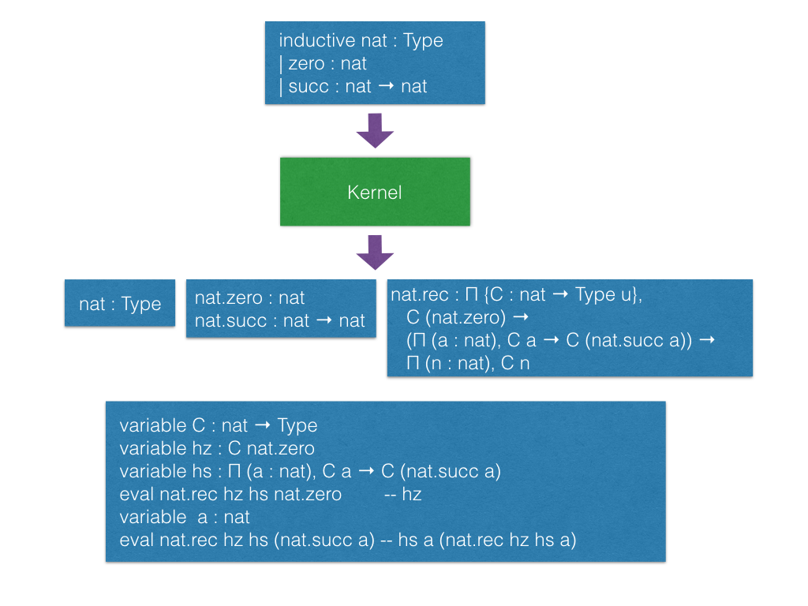
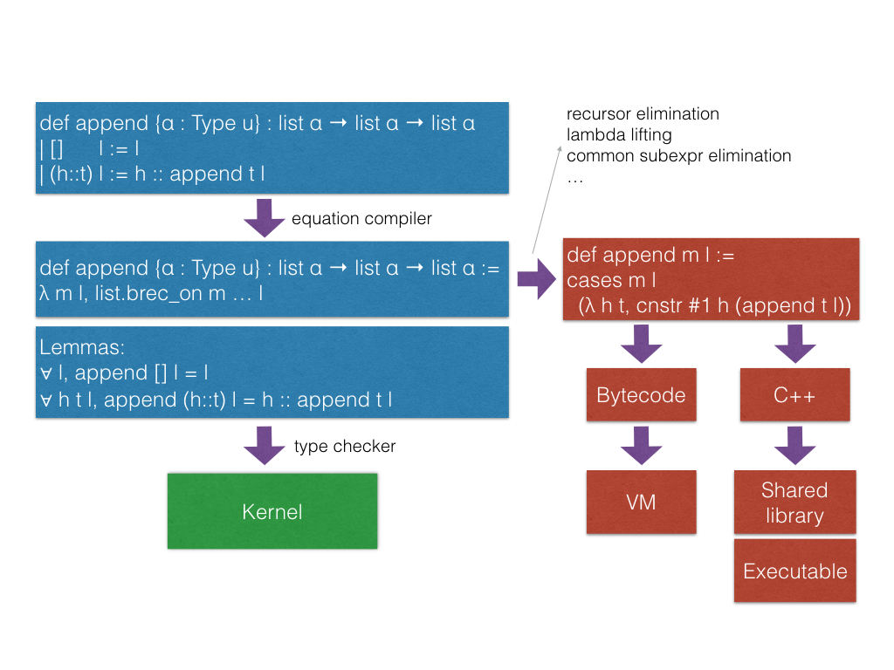
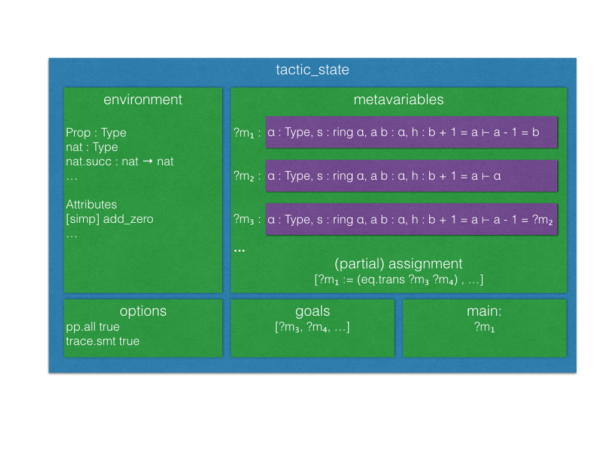
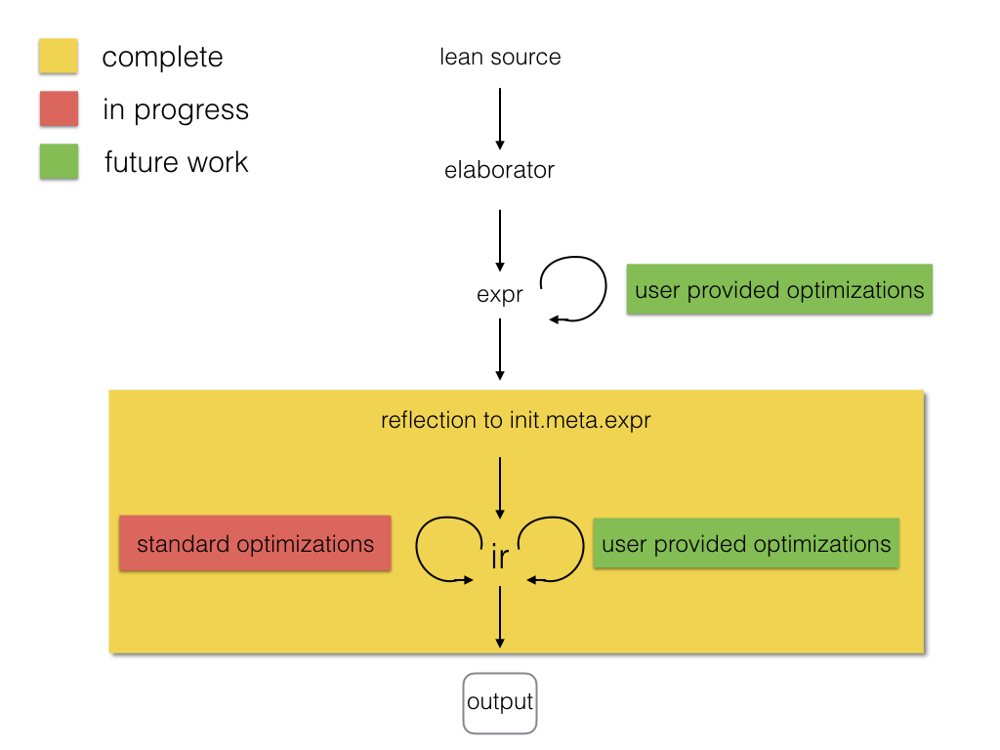

Lean aims to bring two worlds together
"By relieving the brain of all unnecessary work, a good notation sets it free to concentrate on more advanced problems, and in effect increases the mental power of the race." – A. N. Whitehead
Inductive families


Lean has an efficient bytecode interpreter

by tac instructs Lean to use tac : tactic unit to synthesize
the missing term.tactic_state's.They want to avoid quotations, and gloss over the distinction between object and meta expressions.
back.lean: simple Lean tactic for list membership goals
using backward chaining.back_trace.lean: adds tracing to the previous tactic.back_inplace.lean: same example implemeted
on top of the apply tactic.builtin.lean: same example using the builtin backward
chaining tactic.ematch.lean: same example using heuristic instantiation.
Actually, this one is not a form of backward chaining.builtin_ac.lean: Lean has builtin support for associative commutative operators,
but this is not the point of this exercise.flat_assoc.lean: a tactic to "flat" nested applications of associative operators. This tactic
uses only basic primitives.flat_assoc_trace.lean: tracing tactic execution.ac_by_simp.lean: simplifier demo.smt_goal contains the state of the SMT "gadgets" for a particular goal.
"Attaching more state to tactic_state".
tactic ==> smt_tactictactic that does not change the set of hypotheses can be easily lifted
because they do not invalidate the smt_state.smt_tactic.intros
smt_state.revert, induction) can be lifted, but
the affected smt_goal's are reconstructed from scratch.lean --compile hello.lean ./hello "Hello Lean!"
io)expr to irir_compiler)
environment.fold),
type inference (tactic.infer_type), unification (tactic.unify), etc.tactic.doc_string retrieves the doc string for a given
declaration.has_to_format tactic_state.